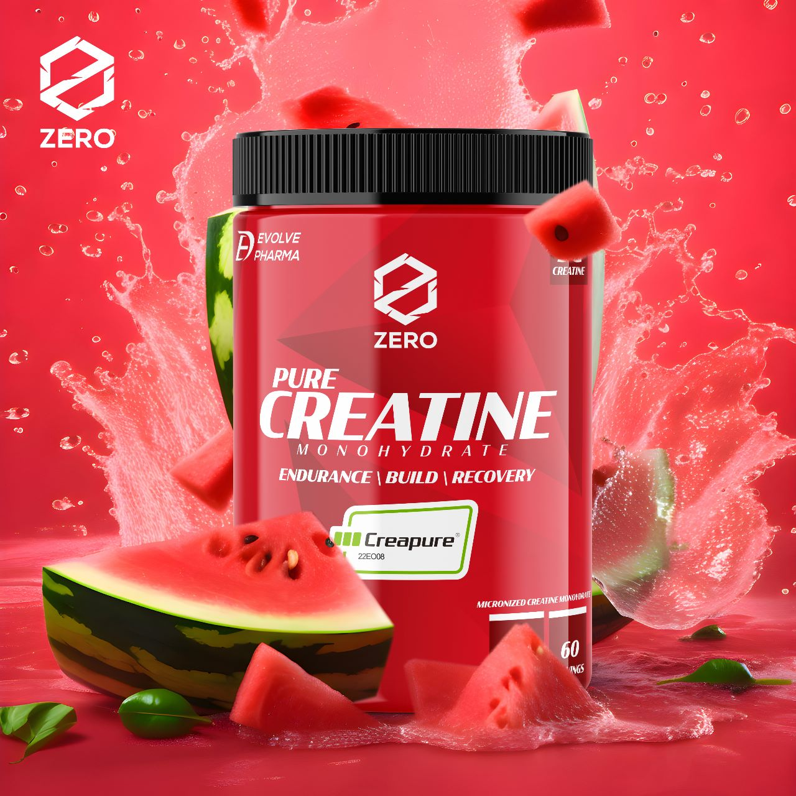
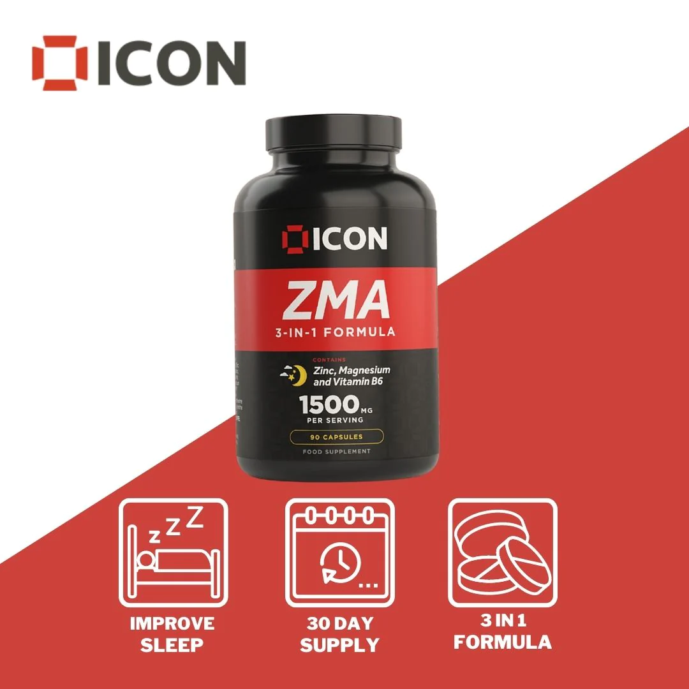
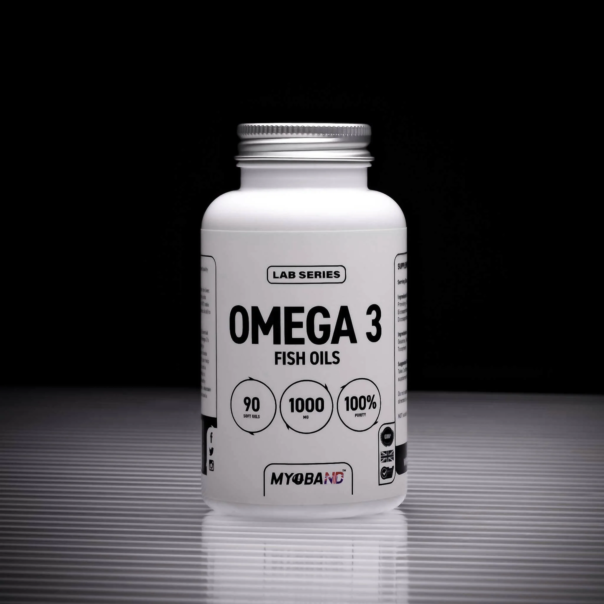

SUPPLEMENT NEDİR? EN İYİ SUPPLEMENTLER!

Supplement nedir? Ne işe yarar? En iyi supplementler hangileri?
Top 5 Supplement ile EMRE GYM’in önerdiği sporcu besinleri sizin “hangi supplementi almalıyım?”
sorunuza yanıt verecek. Paranızı akıllıca kullanacaksınız!
İstediğimiz vücuda ulaşmak bilinçli antrenman, kaliteli beslenme, disiplinli dinlenme ve doğru
mantalitenin; kısacası dengeli bir hayatın sonucu. Dengeyi bozan bir faktör ne kadar küçük olursa olsun
istediğimiz sonuçlara ulaşmamıza engel oluşturacaktır. Supplementlerin amacı da yol üzerindeki engelleri
azaltmaktır.Supplementleri araştırmak ve doğru bilgiler ışığında karar almak kolay bir iş değil. Satın
alınmış araştırmalar, abartılan sonuçlar ve manipüle edici yorumlamalar maalesef şehir efsanelerinden
ibaret değil. Supplement ne demek, sporcu besinleri demek. Sporculara özel hazırlanmış gıda
demek.
Bunlara takviye deniyor çünkü tek başına hayatta kalmanız için gereken tüm vitamin, mineral, yeterli
besin bu ürünlerde yok. O yüzden öğün yerine kullanılmazlar. Supplement eksik gidermek için var.
En İyi Supplementler!
#1: Kreatin

Kreatin ağırlık çalışması, sprint, güreş gibi güce dayalı spor yapanlar için enerji kullanımında rol
oynar.
Araştırmalara göre temposu düşük, yoğunluğu yüksek sporcular için performans artıracak tek supplement
kreatindir.
Gücünüzü doğrudan etkilediği için daha yüksek ağırlıklarla çalışmanıza yardımcı olabilir, dolaylı olarak
da kas gelişimini ve kütle artışını destekler. Üzerinde en çok araştırma yapılan supplement olan
kreatin, hiçbir sağlık sorununa sebep olmadığı gibi; beyin, kemik, kas ve karaciğere faydalıdır.
Kreatin ürünleri arasında dağlar oynamaz, fakat bir miktar kalite farkı bulunuyor. Farklı kreatin
formları da bulunuyor, fakat en temel kreatin monohidrat da işimizi görebiliyor.
Kreatin suda kolay çözünen bir madde olmadığı için toz yerine tablet olarak da tercih edebilirsiniz,
tamamen arzunuza göre.
#2: ZMA (Çinko ve Magnezyum)

Çinko ve magnezyum… Metabolizmanın birçok faaliyetinde birinci derecede rol oynayan mineraller.
Eksikliğinde ortaya çıkan sıkıntılardan birkaçı: Düşük cinsel istek, saç dökümü, tırnakta beyaz lekeler,
düşük testosteron ve sivilce…
Ailecek supplement etmeniz gerekiyor, özellikle sporcuların eksik olduğu mineraller. Supplement ile
desteklenmesi testosteronunuzu doğal olarak yükseltir (olması gerektiği yere çeker) ve uykularınızdan
aldığınız verim artar. Dolaylı olarak salonda ve mutfakta yaptıklarınızın yürümesine yardımcı
olur.
Çinko ve magnezyumu ayrı ayrı alabilirsiniz elbette. Fakat sporcular genelde bunu ZMA olarak alırlar.
Dozları buna göre ayarlanmıştır ve bu şekilde daha rahat alabilirsiniz.
#3: Omega-3 Balık Yağı!

Genellikle diyetimizde omega-6 oranı omega-3 oranından çok fazla. Hele bir de spor yapıp, hayvansal gıda
tüketenlerde omega-3 oranı çok düşük oluyor. Bu birçok probleme kapı aralıyor. Eğer uzun dönemde
sağlığınızı düşünüyorsanız, antrenmanlardan yenilenmenizi hızlandırmak istiyorsanız, omega-3 olmazsa
olmaz; EMRE GYM onaylı!
Piyasada birçok farklı ürün var, hangisini tercih etmeliyim, kafam karıştı diyorsanız haksız
sayılmazsınız. Omega-3 balık yağı supplementlerinin kalitesi ve miktarı önemli.
Düzenli kullanmanız gereken bir supplement olduğu için fiyatı da önemli. Bu yüzden en iyisini anlamak
için makalemizi incelemenizi öneririz.